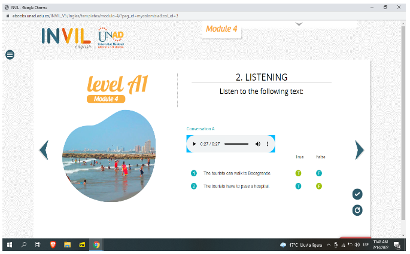
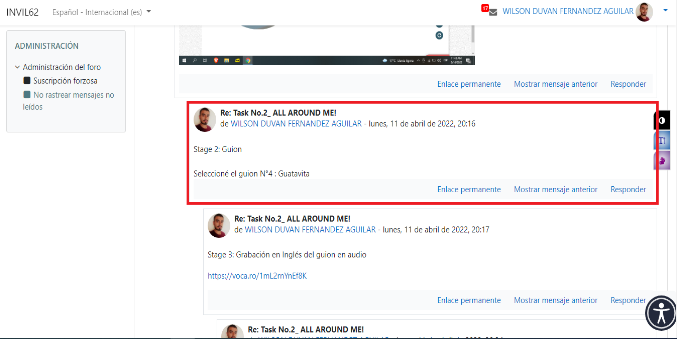
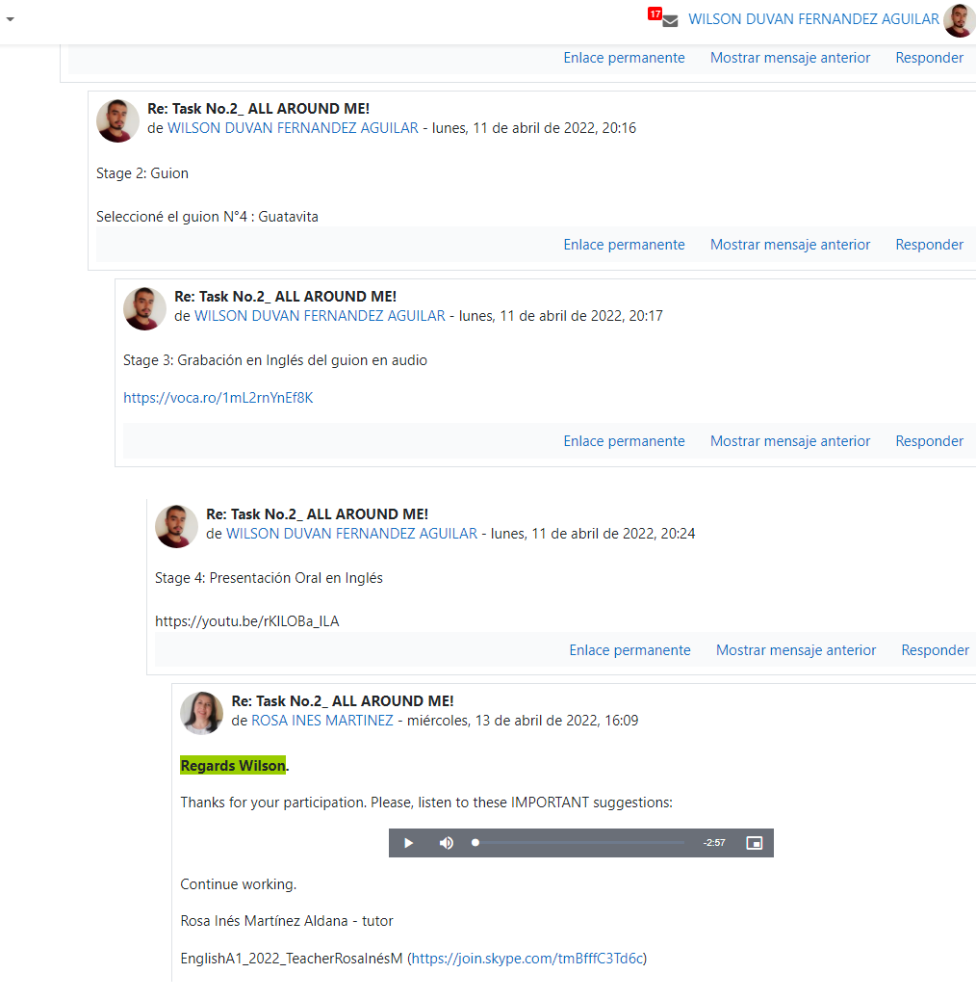

All around me
Stage 1
Stage 2
Stage 3
Grabación en Inglés del guión en audioStage 4
Espacios de Aprendizaje
Stage 5
Autoevaluación: reflexión y crecimiento personal.
- Sí, estudié y aprendí los temas sugeridos del E-book.
- Sí, participé en el foro dentro de los tiempos indicados.
- Participé en el foro de esta tarea.
- Me prepare y dedique el tiempo suficiente a la presentación oral en video.
- Sí, me siento más seguro de expresarme en inglés.
- Aporta mucho. No solamente a futuro en cuanto a oportunidades laborales sino también en el hecho de poder comunicarme con otras personas que pueda conocer.
Reflexión final: Mi desempeño fue bueno ya que pude mantener una comunicación fluida con mi instructora.
Calificación de autoevaluación: 10.